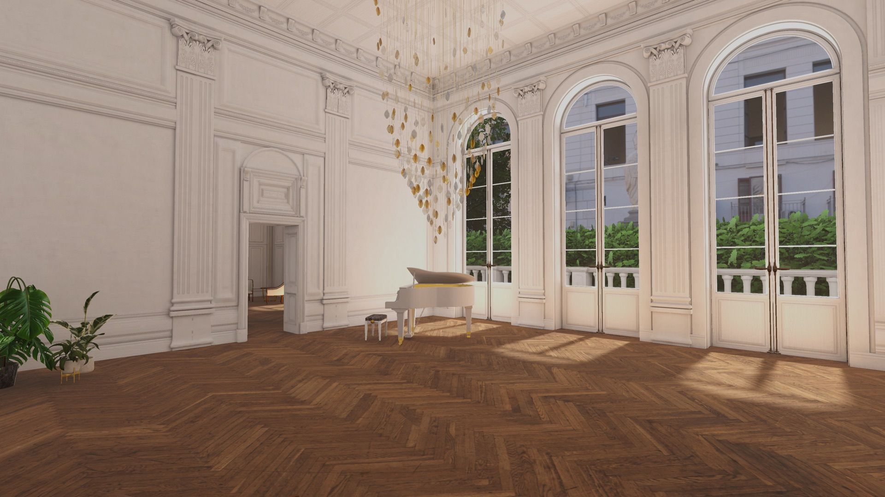
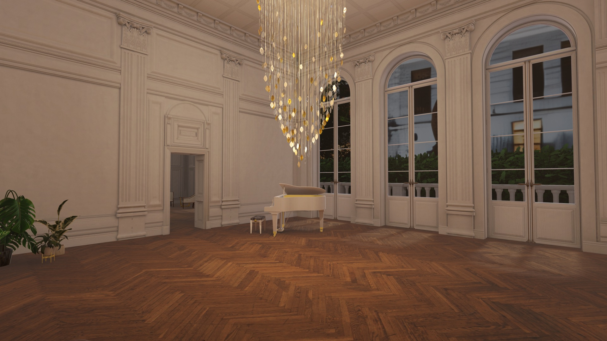
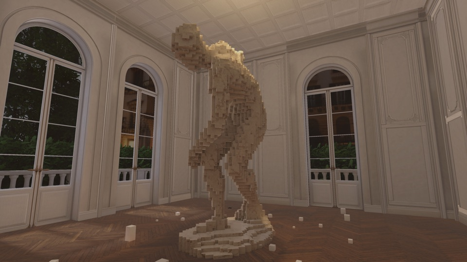
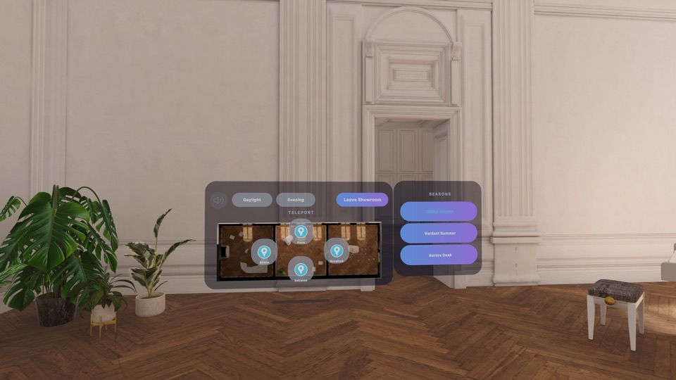
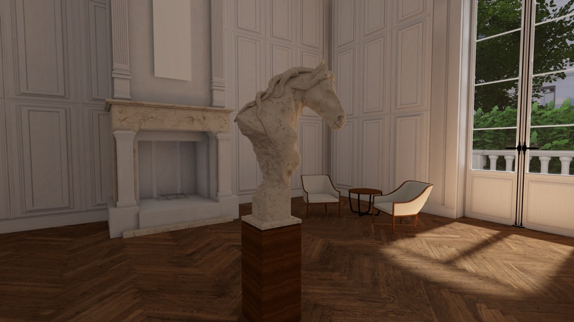

Every duct, fixing and fastener — then a place
Source BIM on the left, delivered on the right, same camera. Drag it.


Drag the handle, or focus it and use the arrow keys.
An airport terminal, at full scale
A major European hub. Thirty-seven million polygons became a concourse you can walk end to end.
The reduction is the point. Cutting 89% of the geometry while keeping silhouettes intact is the difference between a model you orbit on a screen and a building you walk through at 1:1.
How a building gets there
The same four stages, at a very different scale.
-
STAGE 01
Ingest
Your BIM as issued. Every discipline, nothing stripped out.
IN · Revit, IFC and all major 3D formats -
STAGE 02
Optimise
Decimation with silhouette preservation, UV work and atlasing, down to a budget a headset holds at walking scale.
OUT · USDZ and GLB -
STAGE 03
Author
Materials, lighting and the detail that makes a space legible rather than merely accurate. This is where the hands-on work goes.
OUT · lighting states, finished materials -
STAGE 04
Deliver
Explored on foot, at full scale, at any time of day.
OUT · Vision Pro, walkable
A full space takes days to weeks, depending on complexity — automation does the heavy lifting, people do the judgement.
What “explorable” actually means
A finished space in the AlternateXR app — the quality bar we hold for work like the airport. Free to try on Vision Pro.



Room-scale, not doll's house
Objects sit at the size they really are. You walk around them.

Move and light it from inside
Floorplan, lighting and seasons, without taking the headset off.

Close enough to inspect
Pieces still hold up when someone walks right up to them.
Any space that has to be sold before it exists
If a decision depends on people understanding a model, this applies.
Send us a model
Bring the BIM you already have. Thirty minutes is enough to scope it.